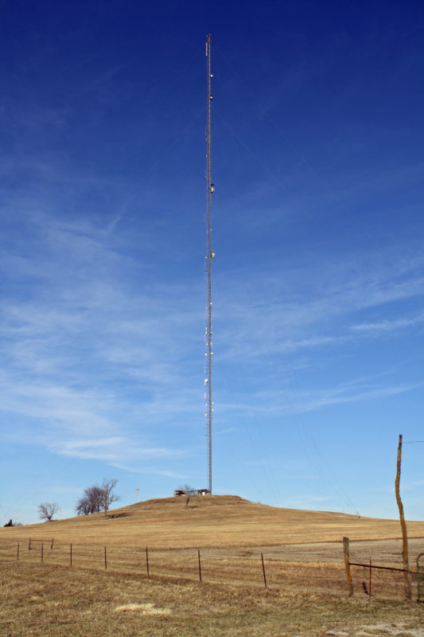

Next Club Meeting: July 10, 2024
 Meetings are always held on the second Wednesday of the month. The next in-person meeting will be at Wayne and Larry's Sports Bar and Grill (933 Iowa Street in Lawrence). Meetings are open to both members and non-members. Social begins at 6:30 p.m. Presentation and business meeting follow at 7:00 p.m. Join the club's electronic mailing list for additional meeting details and updates.
Meetings are always held on the second Wednesday of the month. The next in-person meeting will be at Wayne and Larry's Sports Bar and Grill (933 Iowa Street in Lawrence). Meetings are open to both members and non-members. Social begins at 6:30 p.m. Presentation and business meeting follow at 7:00 p.m. Join the club's electronic mailing list for additional meeting details and updates.
Operating Events

The club regularly participates in on-the-air operating events, including ham radio's annual open house, also known as ARRL Field Day, which is held every year during the 4th full weekend in June. Events like this not only help us test the limits of our equipment and help us be better prepared in the event of an emergency, they're also a lot of fun. During 2022, we operated from Centennial Park in Lawrence. Our group also enjoys participating in a similar offshoot event called Winter Field Day. And in 2020, the club posted the top score in the club category during the Kansas QSO Party. Social events are also held regularly.
Club Repeater
DCARC owns and operates a 2-meter analog FM repeater (WØUK/R) on a frequency of 146.760 MHz, with a standard -600 kHz input offset. A CTCSS tone of 88.5 Hz is required to access the repeater. The antenna is on a communications tower located southeast of Lawrence, providing wide-area coverage of Douglas County and surrounding areas. The repeater is open for general use to all licensed amateur radio operators, subject to the WØUK Repeater User Agreement.
Our club repeater hosts a weekly social net every Sunday evening at 7:30 p.m. and an ARES net every Sunday evening at 8:00 p.m.
WØUK Repeater User Agreement
Revision adopted 14 August 2019
The W0UK repeater is privately owned and operated by the Douglas County Amateur Radio Club, and is provided as a service to the amateur radio community in the Lawrence Kansas area. If you do not agree to the terms of this agreement, you are not authorized to use the 146.16 MHz frequency with a correct access tone, when located within range of this repeater.
TERMS OF USE
Transmitting on 146.16 MHz with a subaudible tone of 88.5Hz to knowingly activate the W0UK repeater is considered use of the repeater. Users who knowingly use the W0UK repeater and who do not comply with these terms may be banned by the trustee from using the W0UK repeater for a specified period of time. This action is authorized under 47 CFR 97.205 (e) "Limiting the use of a repeater to only certain user stations is permissible." Flagrant or repeated violation of FCC regulations will be reported to the ARRL Volunteer Monitoring Program, which may refer the matter to the FCC for enforcement. Serious and intentional violation of this agreement should be reported to the repeater trustee or other member of the repeater team. Please note that content passed on the W0UK repeater may be recorded and later shared with Official Obsever or FCC enforcement personnel. All users must comply with all FCC regulations, including the prohibition of profanity, music, commercial traffic, or malicious interference. See 47 CFR §97.113 Prohibited transmissions. (a) No amateur station shall transmit: (4) obscene or indecent words or language. For clarity regarding what is obscene, since Amateur Radio is not a subscription service, see
https://www.fcc.gov/sites/default/files/obscene_indecent_and_profane_broadcasts.pdf.
The W0UK repeater is open for use to all persons holding a valid amateur radio license who also agree to operate under these terms, and who is not currently under a trustee ban from this repeater. Per FCC rules, any person (licensed or unlicensed) may use the W0UK repeater in an emergency situation involving life, safety, or significant property loss, when no other communications method is feasible or practical.
The W0UK repeater is sometimes used to support community events or emergency services. During these events, please be respectful of the event, and use other area repeaters or simplex or another band during the duration of the event. The W0UK repeater also hosts regularly scheduled nets; please yield the use of the repeater during these nets.
The W0UK repeater is intended to connect area amateur radio operators in an inclusive environment. Accordingly, all users of the W0UK repeater are to conduct communications in a courteous manner. While it can be worthwhile to explore alternative viewpoints, it is imperative that one refrain from personal attacks and Ad-Hominem arguments. If you allow your passion to destroy your civility, you may be asked to take your argument to another venue. Failure to comply with such a request may be referred to the Repeater trustee for possible further action. If conducting an extended conversation, please allow others the opportunity to break in to use the repeater to call other operators.
Amateur radio is a self-policing service. If a user of the W0UK repeater is not following the terms of this agreement, a polite reminder referring the user to this agreement is appropriate. If any user becomes confrontational, or uses the repeater while known to be subject to a current trustee ban, the appropriate action for all other users is to change frequencies. No warranty of service is expressed or implied. This repeater is maintained by a volunteer staff. Service outages or other issues may occur which may require an extended time period to correct. The club and the trustee assume no liability in such an event.
Search for other area repeaters using RepeaterBook.
Licensing

DCARC's Volunteer Examiner Team is able to conduct in-person test sessions on a regular basis and can do so upon request. Remote test sessions are also being conducted by several other radio clubs.
While the club currently does not have formal classes scheduled, there are many resources available for self-study. The recommended manual is the ARRL Ham Radio License Manual, which can be purchased directly from the National Association for Amateur Radio or via Amazon. Be sure to purchase the most recent (5th) edition, which covers material in the current FCC Technician Question Pool.
- ARRL Bookstore and License Manuals
- W5YI License Manuals
- KEØOG's YouTube License Training and Resources (Free - Based on the ARRL Ham Radio License Manual)
- KB6NU's No-Nonsense Technician Class License Study Guide (Free PDF Version)
- List of Remote Ham Radio Test Sessions via HamStudy.org
- AA9PW's Amateur Radio Exam Practice Page
Club Officers
| Office | Officer | Contact Info |
|---|---|---|
| President | Ken Filardo, KAØTHK | kfilardo@aol.com |
| Vice President | John Harris, N6UOP | john.harris101@yahoo.com |
| Treasurer | Justin Graham, KFØDAB | jgraham@n0c.io |
| Secretary | Linda Randel, KCØNFT | KC0NFT@arrl.net |
| Repeater Trustee | Ken Filardo - KAØTHK | kfilardo@aol.com |
| Emergency Coordinator | Kevin Oneslager, KSØEGL | kevin@prometheusinc.net |
| WØUK QSL Manager | Richard Messer, KEØSWG | cullyferg2010@gmail.com |
DCARC meetings are governed by its constitution and bylaws.
Membership
- Individual Membership: $25/year
- Family Membership: $30/year (Be sure to include a list of licensed family members.)
- Student Membership: $10/year
DOUGLAS COUNTY AMATEUR RADIO CLUB PO BOX 1404 LAWRENCE KS 66044-8404